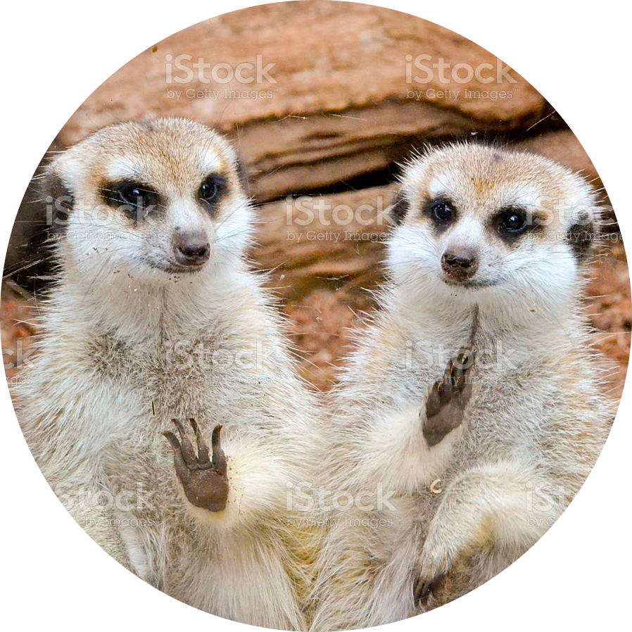

|  |
SniffersFrankmasons, hologram inventors and active users, CEOs and founders of Sniffers Inc. |
The meerkat (Suricata suricatta) or suricate is a small mongoose found in southern Africa. It is characterised by a broad head, large eyes, a pointed snout, long legs, a thin tapering tail, and a brindled coat pattern.
| OSINT | ⭐⭐⭐⭐⭐ |
| Espionage | ⭐⭐⭐⭐⭐ |
| Snowboard | ⭐⭐⭐⭐ |
If you want to contact us, please, click the link